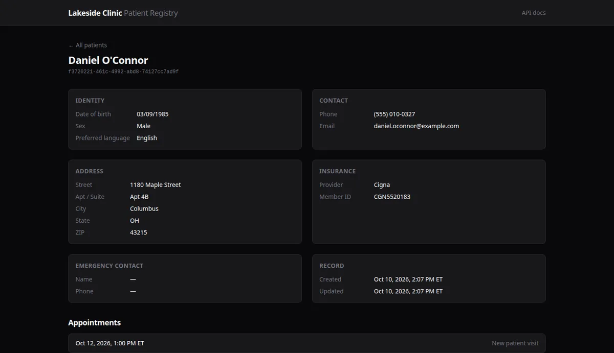
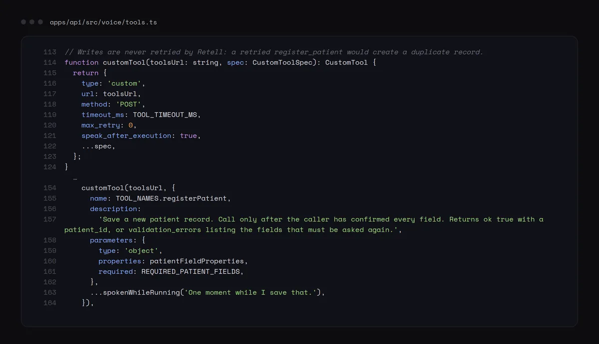
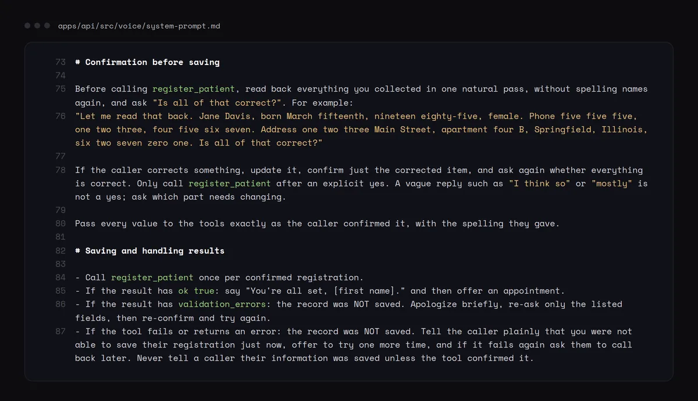

Voice AI Patient-Intake Agent
Patient registration by phone, with nothing saved before a read-back.
A phone agent that registers new patients over a U.S. number in English or Spanish, and saves nothing until the caller confirms a read-back.

Registration by phone, with no half-saved records.
Callers give their details to a voice agent instead of a form. The hard parts are accuracy and safety: names spelled right, bad dates caught, and no duplicate or half-written patient when a call drops or the network stalls.
- Names spelled out, and each value confirmed once
- Dates, phone numbers, states and ZIP codes checked twice: Zod in the API and CHECK constraints in Postgres
- Returning callers found by phone number, so their record is updated instead of duplicated
- Mock appointment booking from open slots, where a unique time stops double booking
- English and Spanish, with a transcript and summary stored for each call and linked to the patient
One validation contract for the agent, the API and the database.
- Caller
- U.S. phone numberPhone call
- Voice
- Retell AITelephony, speech to text
- LLM agent14-section prompt, 5 tools
- ElevenLabsText to speech
- API
- Signed webhooksHMAC check on the raw body
- Fastify, ZodTool handlers, REST routes
- Data
- PostgreSQL, DrizzlePatients, calls, appointments
- Dashboard
- Next.jsPatients and their calls
Stack
- Retell AI
- OpenAI model
- ElevenLabs
- Fastify
- Zod
- Drizzle
- PostgreSQL
- Next.js
- Tailwind CSS
- Vitest
- PGlite
- Railway
- Vercel
- Docker
Key decisions
- 01The model changes state only through five tools, and every tool validates with the same Zod schemas as the REST API
- 02Nothing is written before a confirmed read-back, and write tools never retry, so one confirmation cannot create two records
- 03Every tool call and call event is signature-checked over the raw body before any handler runs
- 04Prompt, tool schemas and agent settings live in the repo and are provisioned by an idempotent sync script
- 05Integration tests run the real migrations on PGlite and pin the model's tool schemas to the API's
What I worked on.
- Phone agent that registers new patients over a U.S. number in English or Spanish: a Retell LLM agent with a 14-section prompt and 5 tool-calling functions, saving to Postgres only after the caller confirms a read-back.
- Fastify and Zod API, Drizzle on Postgres and a Next.js dashboard; the agent's tools and the REST API share one validation schema, webhooks are signature-checked, and 53 tests run against a real Postgres engine (PGlite). Deployed on Railway and Vercel.
- Prompt, tool schemas and agent settings live in the repo and are provisioned by an idempotent sync script; tests keep the model's tool schemas in step with the API and forbid retries on write tools so one confirmation can never create two records.
Inside the product.
Screenshots from a local run on fictional demo data.
Patient registry, Next.js dashboard



Agent and API



The agent can only touch data through validated tools: bad input comes back as field-level errors that the agent asks about again, and a dropped call leaves nothing behind.